(22) Sim New – draft#
Motivation: finally fixed the bug for pursuit condition. it had to do with computing x_env given mask.
Show code cell source
# HIDE CODE
import os, sys
from copy import deepcopy as dc
from os.path import join as pjoin
from IPython.display import display, IFrame, HTML
# tmp & extras dir
git_dir = pjoin(os.environ['HOME'], 'Dropbox/git')
extras_dir = pjoin(git_dir, 'jb-MTMST/_extras')
fig_base_dir = pjoin(git_dir, 'jb-MTMST/figs')
tmp_dir = pjoin(git_dir, 'jb-MTMST/tmp')
# GitHub
sys.path.insert(0, pjoin(git_dir, '_MTMST'))
from figures.fighelper import *
from model.opticflow import *
# warnings, tqdm, & style
warnings.filterwarnings('ignore', category=DeprecationWarning)
from tqdm.notebook import tqdm
from rich.jupyter import print
%matplotlib inline
set_style()
Show code cell source
# HIDE CODE
def _create_ticks(of, tick_spacing: int = None):
if tick_spacing is None:
tick_spacing = 15 // of.res # of.fov // 3
of.ticks, of.ticklabels = zip(*[
(i, str(int(np.round(np.rad2deg(x))))) for i, x
in enumerate(of.span) if i % tick_spacing == 0
])
return
def show_thetaphi(t, p):
fig, axes = create_figure(1, 4, (13, 2.5), tight_layout=True)
im = axes[0].imshow(t, cmap='nipy_spectral')
plt.colorbar(im, ax=axes[0])
im = axes[2].imshow(p, cmap='hsv', vmin=0, vmax=2*np.pi)
plt.colorbar(im, ax=axes[2])
for ax in [axes[0], axes[2]]:
ax.invert_yaxis()
ax.tick_params(labelsize=10)
ax.set(
xticks=of.ticks,
yticks=of.ticks,
xticklabels=of.ticklabels,
yticklabels=of.ticklabels,
)
axes[1].axvline(np.deg2rad(fov), color='r', ls='--', label=f'{fov} deg')
sns.histplot(
t.ravel(), ax=axes[1], label=r'$\theta$',
bins=np.linspace(0, np.pi/2, 91), stat='count')
sns.histplot(
p.ravel(), ax=axes[3], label=r'$\phi$', color='C0',
bins=np.linspace(0, 2*np.pi, 37), stat='count')
sns.histplot(
p[t <= np.deg2rad(fov)], ax=axes[3], label=r'$\phi$' + f' (<{fov})', color='C1',
bins=np.linspace(0, 2*np.pi, 37), stat='count')
for ax in [axes[1], axes[3]]:
ax.set_ylabel('')
ax.legend(fontsize=8, loc='upper left')
plt.show()
def show_xyzd(x, y, z, d, cmap='Spectral', grid=False):
fig, axes = create_figure(1, 4, (12, 2.5), 'all', 'all', tight_layout=True)
im = axes[0].imshow(x, cmap=cmap)
plt.colorbar(im, ax=axes[0])
axes[0].set_title(r'$\mathcal{x}$', y=1.02, fontsize=17)
im = axes[1].imshow(y, cmap=cmap)
plt.colorbar(im, ax=axes[1])
axes[1].set_title(r'$\mathcal{y}$', y=1.02, fontsize=17)
im = axes[2].imshow(z, cmap=cmap)
plt.colorbar(im, ax=axes[2])
axes[2].set_title(r'$\mathcal{z}$', y=1.02, fontsize=17)
im = axes[3].imshow(d, cmap=cmap)
plt.colorbar(im, ax=axes[3])
axes[3].set_title(r'$\mathcal{d} = \sqrt{\mathcal{x}^2+\mathcal{y}^2+\mathcal{z}^2}$', y=1.02, fontsize=14)
axes[-1].invert_yaxis()
for ax in axes.flat:
ax.tick_params(labelsize=10)
ax.set(
xticks=of.ticks,
yticks=of.ticks,
xticklabels=of.ticklabels,
yticklabels=of.ticklabels,
)
if grid:
add_grid(axes)
plt.show()
def hist_xyzd(x, y, d, z=None, bins=30):
kws = {
'bins': bins,
'stat': 'percent',
}
fig, axes = create_figure(2, 4, (13, 5), sharey='all', constrained_layout=True)
sns.histplot(x.ravel(), ax=axes[0, 0], **kws)
sns.histplot(y.ravel(), ax=axes[0, 1], **kws)
if z is not None:
sns.histplot(z.ravel(), ax=axes[0, 2], **kws)
sns.histplot(d.ravel(), ax=axes[0, 3], **kws)
sns.histplot(x[theta < np.deg2rad(fov)], ax=axes[1, 0], **kws)
sns.histplot(y[theta < np.deg2rad(fov)], ax=axes[1, 1], **kws)
if z is not None:
sns.histplot(z[theta < np.deg2rad(fov)], ax=axes[1, 2], **kws)
sns.histplot(d[theta < np.deg2rad(fov)], ax=axes[1, 3], **kws)
axes[0, 0].set_title(r'$x$', y=1.02, fontsize=17)
axes[0, 1].set_title(r'$y$', y=1.02, fontsize=17)
axes[0, 2].set_title(r'$z$', y=1.02, fontsize=17)
axes[0, 3].set_title(r'$d$', y=1.02, fontsize=17)
plt.show()
from skimage.transform import resize
fov = 45
dim = 65
res = 2*fov/(dim-1)
res
1.40625
%%time
self = of = OpticFlow(
category='fixate',
num=10000,
n_obj=2,
vlim_slf=(0.01, 1.0),
vlim_obj=(0.01, 1.0),
fov=fov,
res=res,
).compute_coords()
_create_ticks(of)
of.alpha.shape
ax = sns.histplot(x=self.fix[:, 0], y=self.fix[:, 1])
ax_square(ax)
<AxesSubplot:>
self.fix
array([[ 0.27392337, -0.46042657, 1. ],
[ 0.21327155, 0.45899312, 1. ],
[ 0.08724998, 0.87014485, 1. ],
...,
[-0.33171479, 0.58736205, 1. ],
[-0.78013898, -0.18938395, 1. ],
[ 0.2002712 , 0.31791632, 1. ]])
%%time
x_obj, v_tr, v_rot = self.compute_flow()
CPU times: user 32.4 s, sys: 5.75 s, total: 38.2 s
Wall time: 38.2 s
for n, obj in self.objects.items():
for i in range(2):
corr = sp_stats.pearsonr(self.fix[:, i], obj.pos[:, i] - self.fix[:, i])[0]
print(f"obj #{n}, i = {i},\tcorr = {corr:0.3f}")
obj #0, i = 0, corr = 0.026
obj #0, i = 1, corr = 0.014
obj #1, i = 0, corr = 0.045
obj #1, i = 1, corr = 0.036
self.alpha_dot.shape
---------------------------------------------------------------------------
NameError Traceback (most recent call last)
Input In [4], in <cell line: 1>()
----> 1 self.alpha_dot.shape
NameError: name 'self' is not defined
i = 550
d = 25
v = np.zeros((d, d, 2))
v[..., 0] = resize(self.alpha_dot[i, ..., 0], (d,) * 2)
v[..., 1] = resize(self.alpha_dot[i, ..., 1], (d,) * 2)
show_opticflow_full(v);
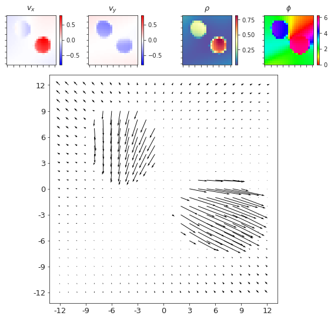
norms_obj = cart2polar(self.objects[1].v)[:, 0]
norms_slf = cart2polar(self.v_slf)[:, 0]
sns.histplot(norms_obj / norms_slf);
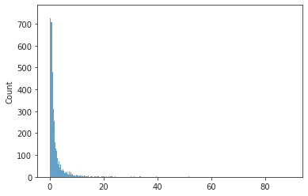
i = np.argsort(norms_obj / norms_slf)[-3]
i
4391
d = 25
v = np.zeros((d, d, 2))
v[..., 0] = resize(self.alpha_dot[i, ..., 0], (d,) * 2)
v[..., 1] = resize(self.alpha_dot[i, ..., 1], (d,) * 2)
show_opticflow_full(v);
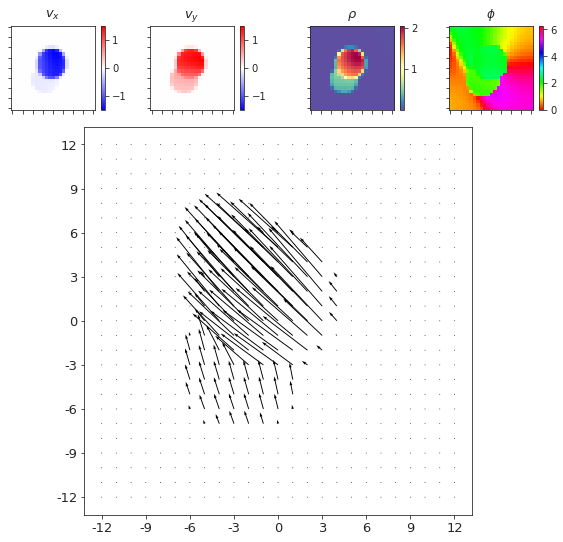
self.objects[1].v[i]
array([-0.58819728, 0.66969313, -0.23379128])
self.v_slf[i]
array([0.00778014, 0.00344126, 0.00889283])
i = np.argsort(norms_obj / norms_slf)[0]
i
6861
d = 25
v = np.zeros((d, d, 2))
v[..., 0] = resize(self.alpha_dot[i, ..., 0], (d,) * 2)
v[..., 1] = resize(self.alpha_dot[i, ..., 1], (d,) * 2)
show_opticflow_full(v);
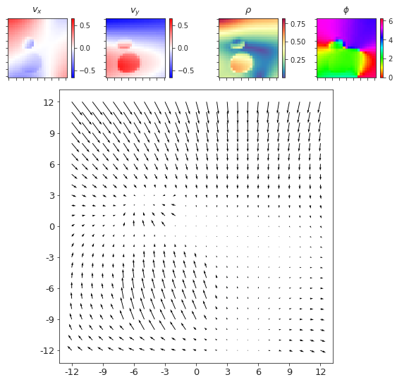
self.objects[0].v[i]
array([-0.23966884, 0.31587134, 0.03312895])
self.objects[1].v[i]
array([-0.00163752, 0.00076312, 0.00986885])
self.v_slf[i]
array([ 0.28737914, -0.77473266, 0.3930329 ])
sp_stats.pearsonr(self.objects[0].alpha[:, 0], self.objects[1].alpha[:, 0])
(0.009176406697185273, 0.3588569798080503)
sp_stats.pearsonr(self.objects[0].alpha[:, 1], self.objects[1].alpha[:, 1])
(0.014075694601877737, 0.15929007555335437)
from sklearn.feature_selection import mutual_info_regression
mutual_info_regression(self.objects[0].pos, self.objects[1].pos[:, 0])
array([0.07827392, 0.02002662, 0.01446407])
collections.Counter(np.round(
self.alpha_dot[:, self.dim//2, self.dim//2, :], 12).ravel())
print({
obj_i: obj.v[i, :] for
obj_i, obj in self.objects.items()
})
{ 1: array([-0.01942597, -0.00594047, 0.00173506]), 2: array([ 0.77505328, 0.51689838, -0.35485947]), 3: array([ 0.6160265 , -0.40146984, -0.8869026 ]) }
print({
obj_i: obj.pos[i, :] for
obj_i, obj in self.objects.items()
})
{ 1: array([0.15239664, 1.11073912, 0.98994943]), 2: array([0.3666167 , 0.68877045, 0.92981573]), 3: array([0.41718809, 0.63856454, 0.49694206]) }
- self.v_slf[i]
array([-0.39321627, 0.19274517, -0.23184461])
fig, axes = create_figure(1, 3, (12.5, 3), 'all', 'all')
for j, ax in enumerate(axes.flat):
im = ax.imshow(x_obj[i, ..., j], vmin=-1, vmax=1)
plt.colorbar(im, ax=ax)
ax.invert_yaxis()
plt.show()
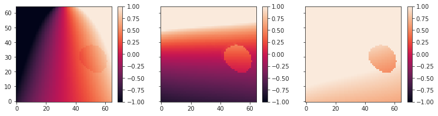
%%time
fov = 45
self = of = OpticFlow(
category='pursuit',
num=10000,
n_obj=2,
vlim_slf=(0.01, 1.0),
vlim_obj=(0.01, 1.0),
fov=fov,
res=5,
).compute_coords()
_create_ticks(of)
x_obj, v_tr, v_rot = self.compute_flow()
u, s, v = sp_lin.svd(
a=flatten_arr(self.alpha_dot, ndim_end=0, ndim_start=1),
full_matrices=False,
compute_uv=True,
)
data = v.reshape(-1, self.dim, self.dim, 2)
s *= 100 / s.sum()
CPU times: user 18.7 s, sys: 1.04 s, total: 19.7 s
Wall time: 10.1 s
i = 540
show_opticflow_full(self.alpha_dot[i]);
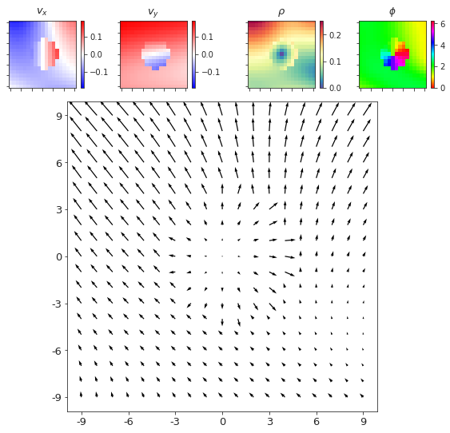
np.round(self.alpha_dot[:, 9, 9], 5)
array([[ 0., 0.],
[-0., -0.],
[-0., 0.],
...,
[-0., 0.],
[ 0., 0.],
[-0., -0.]])
plt.loglog(s)
[<matplotlib.lines.Line2D at 0x7f653c373cd0>]
plt.plot(np.cumsum(s))
[<matplotlib.lines.Line2D at 0x7f653c141880>]
np.round(s, 1)[:20]
array([23.2, 22.7, 7.9, 3.3, 3.2, 2.7, 2.6, 2.2, 2. , 2. , 1.2,
1. , 0.9, 0.8, 0.8, 0.8, 0.7, 0.6, 0.6, 0.5])
from skimage.transform import resize
# data = resize(data, (self.num, 19, 19, 2))
# data.shape
show_opticflow(data, num=4, scale=None, figsize=(13,) * 2);
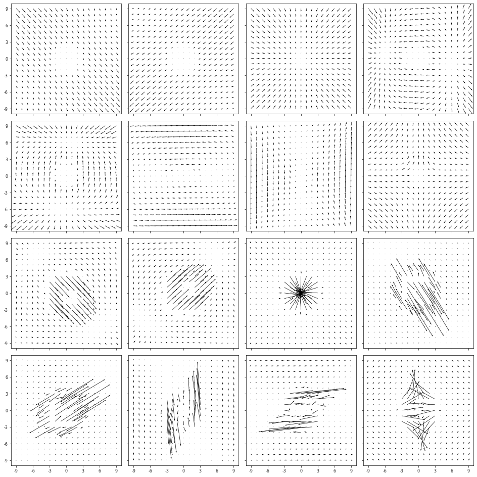
show_opticflow_full(self.alpha_dot[1700]);
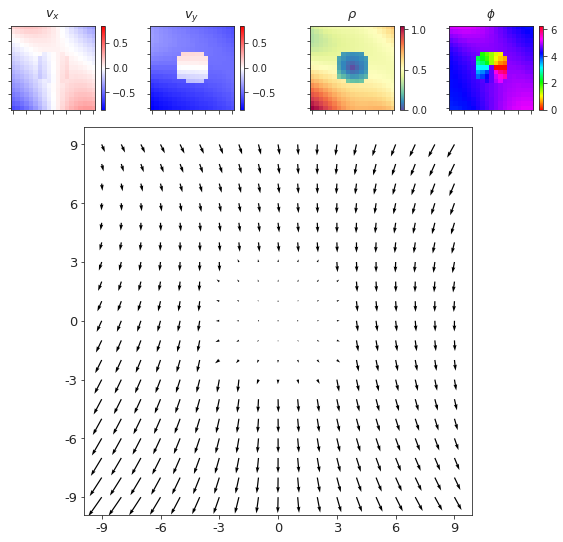
dot = np.einsum('ai, ai -> a', self.fix, self.objects[0].pos)
dot /= sp_lin.norm(self.objects[0].pos, axis=-1)
dot /= sp_lin.norm(self.fix, axis=-1)
dot = np.round(dot, 13)
num_fix_and_pos_aligned = collections.Counter(dot)[1.0]
num_center_alpha_dot_zero = collections.Counter(np.round(
self.alpha_dot[:, self.dim//2, self.dim//2, :], 10).ravel())[0]
assert (
self.num == num_fix_and_pos_aligned and
num_center_alpha_dot_zero == 2 * self.num
)
num_fix_and_pos_aligned, num_center_alpha_dot_zero
(10000, 20000)
imin, imax = np.argmin(self.objects[0].size), np.argmax(self.objects[0].size)
imin, imax
(807, 6161)
m = self.compute_obj_mask(self.objects[0].pos)
plt.imshow(m[imax])
<matplotlib.image.AxesImage at 0x7f653c005040>
sns.histplot(self.objects[0].size)
<AxesSubplot:ylabel='Count'>
fig, ax = create_figure(1,1,(15, 5))
sns.histplot(m.sum(1).sum(1), bins=np.linspace(0, 200, 201) - 0.5, ax=ax)
thres = 4
lbl = f'{100 * (m.sum(1).sum(1) < thres).sum() / self.num:0.1f}% smaller than {thres} pixels'
ax.axvline(thres, color='r', ls='--', label=lbl)
ax.legend();
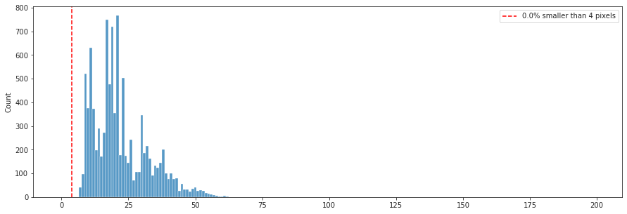
%%time
fov = 45
self = of = OpticFlow(
category='pursuit',
num=10000,
n_obj=1,
vlim_slf=(0, 0),
vlim_obj=(0.01, 1.0),
obj_zlim=(0.3, 0.6),
obj_r=0.3,
fov=fov,
res=5,
).compute_coords()
_create_ticks(of)
x_obj, v_tr, v_rot = self.compute_flow()
u, s, v = sp_lin.svd(
a=flatten_arr(self.alpha_dot, ndim_end=0, ndim_start=1),
full_matrices=False,
compute_uv=True,
)
data = v.reshape(-1, self.dim, self.dim, 2)
s *= 100 / s.sum()
CPU times: user 20.6 s, sys: 1.15 s, total: 21.7 s
Wall time: 11.1 s
np.round(s, 1)[:20]
array([9.1, 9. , 3.3, 2.1, 2.1, 1.8, 1.6, 1.5, 1.2, 1. , 1. , 0.9, 0.9,
0.8, 0.7, 0.7, 0.7, 0.6, 0.6, 0.6])
show_opticflow(data, num=4, scale=None, figsize=(13,) * 2);
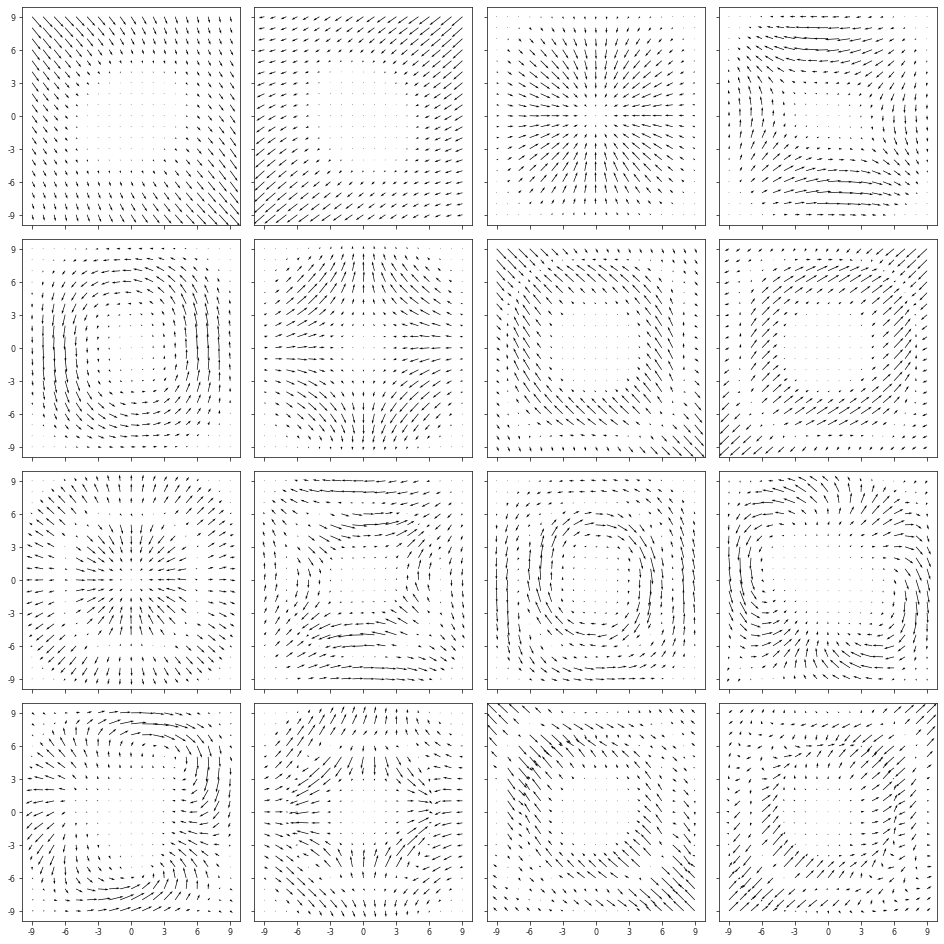
i = 570
show_opticflow_full(self.alpha_dot[i]);
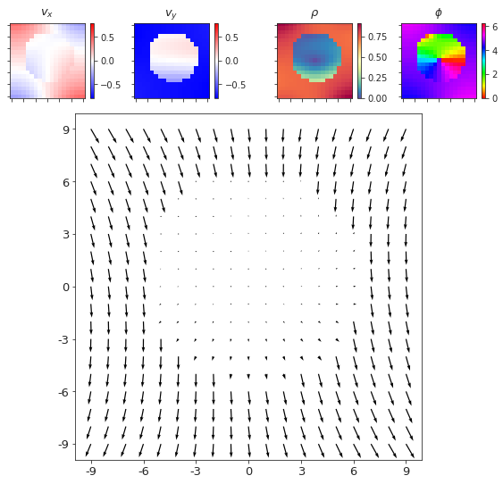
self.objects[0].v[i], self.objects[0].pos[i]
(array([ 0.86034904, -0.08916345, 0.38157321]),
array([-0.27518942, -0.21658276, 0.49635807]))
m = self.compute_obj_mask(self.objects[0].pos)
fig, ax = create_figure(1,1,(15, 5))
sns.histplot(m.sum(1).sum(1), bins=np.linspace(0, 200, 201) - 0.5, ax=ax)
thres = 4
lbl = f'{100 * (m.sum(1).sum(1) < thres).sum() / self.num:0.1f}% smaller than {thres} pixels'
ax.axvline(thres, color='r', ls='--', label=lbl)
ax.legend();
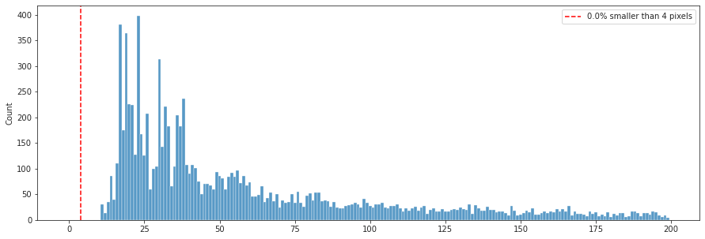
accepted = m.sum(1).sum(1) > thres
accepted.sum()
10000
u, s, v = sp_lin.svd(
a=flatten_arr(self.alpha_dot[accepted], ndim_end=0, ndim_start=1),
full_matrices=False,
compute_uv=True,
)
data = v.reshape(-1, self.dim, self.dim, 2)
s *= 100 / s.sum()
show_opticflow(data, num=4, scale=None, figsize=(13,) * 2);
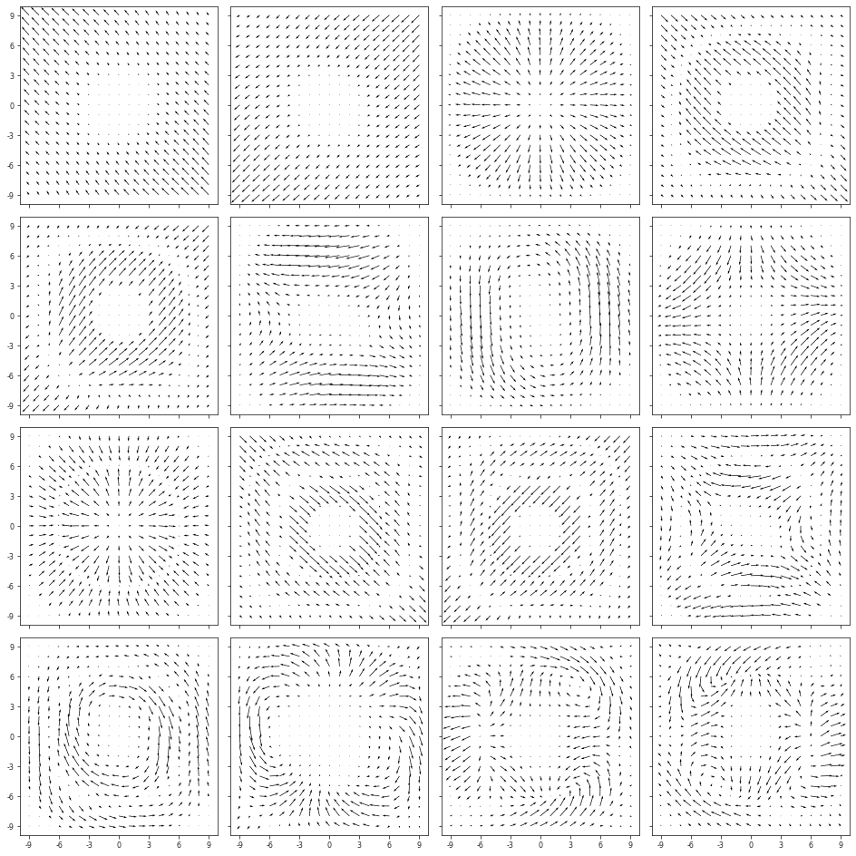
self.objects[0].v[i], self.objects[0].pos[i]
(array([-0.01667229, -0.20598162, -0.02847099]),
array([ 0.17098469, -0.26687053, 0.56705197]))
i = 3
show_opticflow_full(self.alpha_dot[i]);
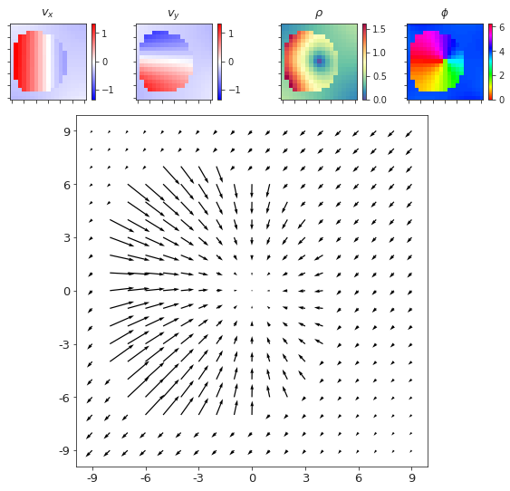
self.objects[0].v[i], self.objects[0].pos[i]
(array([0.50494375, 0.15259131, 0.51850768]),
array([0.25077471, 0.02862893, 0.34524953]))
show_opticflow(self.alpha_dot, num=8, scale=None, figsize=(13,) * 2);
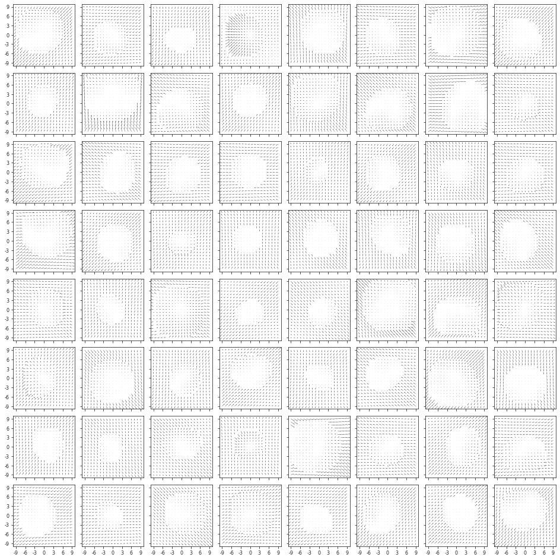
self.fix[320]
array([ 0.08004594, -0.85661175, 1. ])
np.round(s[:10], 4)
array([3.515 , 2.2172, 2.1822, 1.7565, 1.6961, 1.5 , 1.4621, 1.4389,
1.098 , 1.0716])
d_small = 23
data = np.zeros((100, d_small, d_small, 2))
for i in range(len(data)):
a = v[i].reshape(self.dim, self.dim, 2)
data[i, ..., 0] = resize(a[..., 0], (d_small,) * 2)
data[i, ..., 1] = resize(a[..., 1], (d_small,) * 2)
data.shape
(100, 23, 23, 2)
show_opticflow(data, scale=0.3);
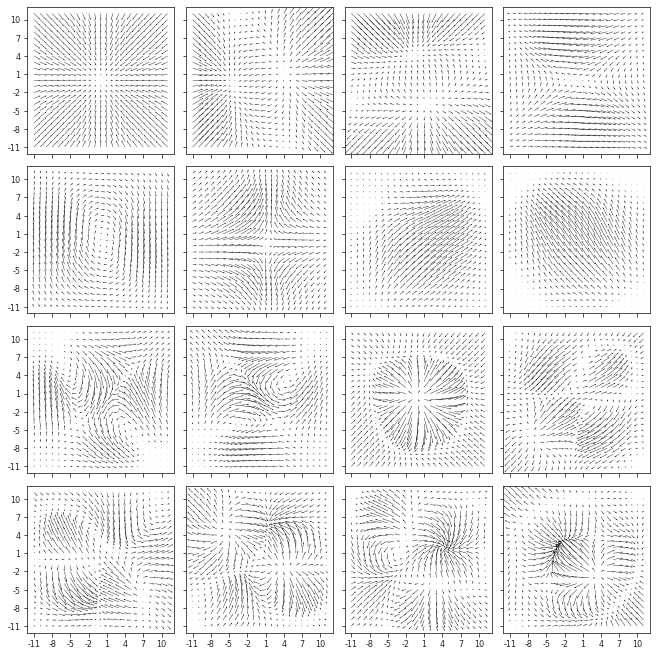
for i in range(10):
show_opticflow_full(data[i], scale=0.4);
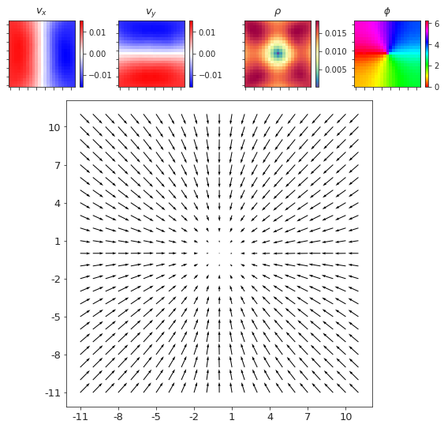
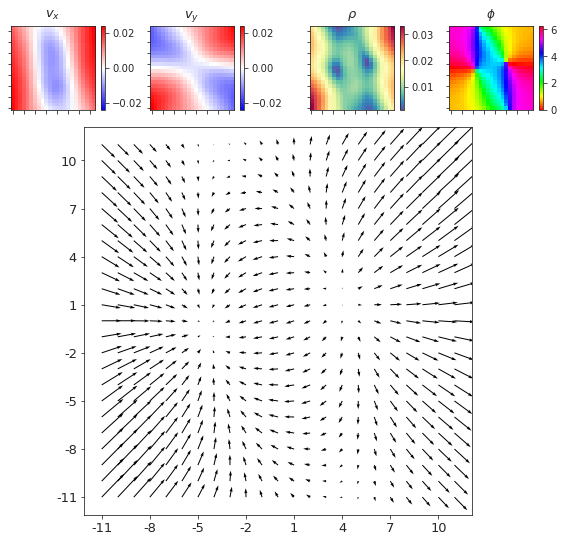
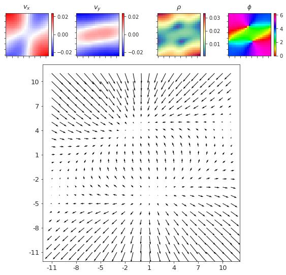
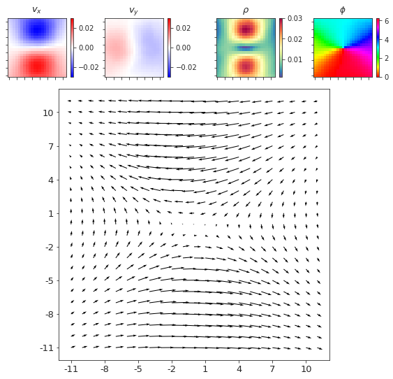
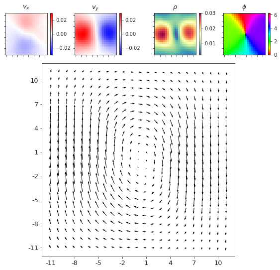
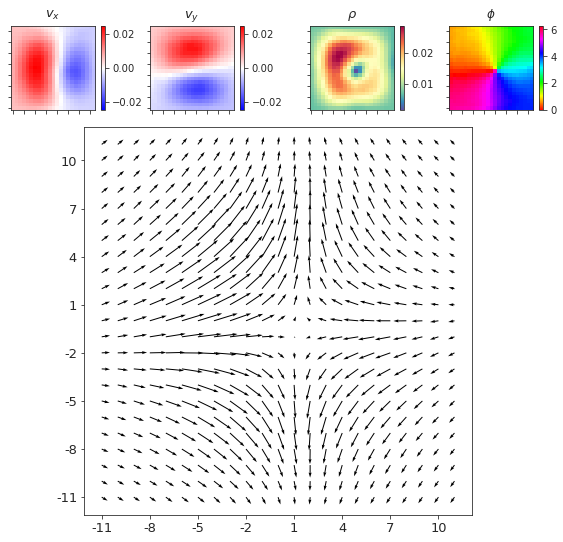
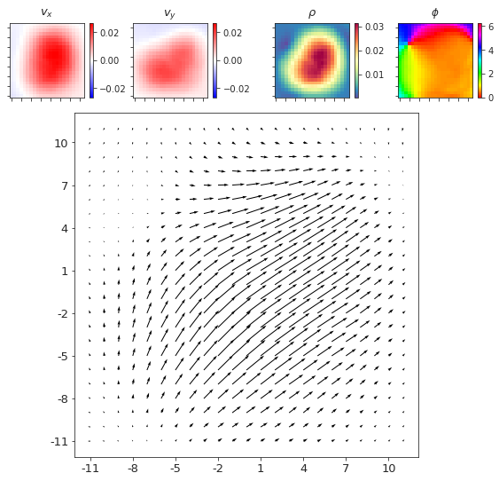
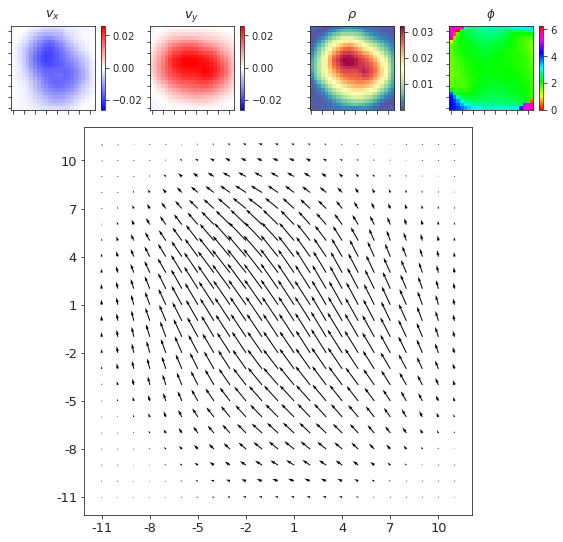
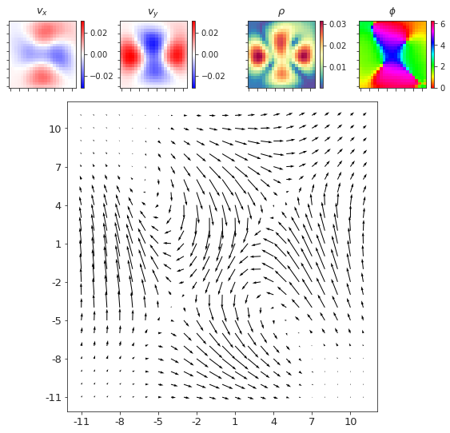
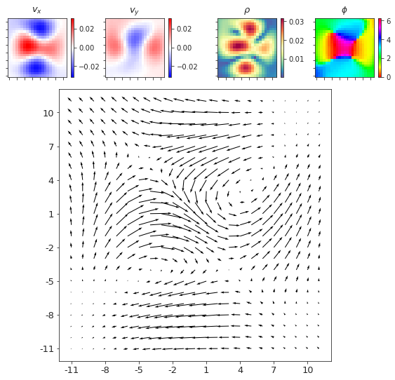
delta = sp_lin.norm(self.objects[0].alpha - self.objects[1].alpha, axis=1)
sns.histplot(delta);
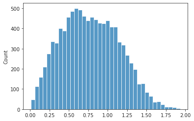
np.where(np.logical_and(0.48 < delta, delta < 0.49))[0]
array([ 182, 226, 494, 496, 534, 585, 612, 963, 967, 1152, 1560,
1614, 2133, 2214, 2461, 2488, 2741, 2786, 2859, 2890, 2989, 3089,
3789, 3895, 4146, 4304, 4431, 4877, 4894, 4940, 5008, 5084, 5123,
5162, 5188, 5358, 5485, 5493, 5511, 5876, 5928, 6046, 6051, 6397,
6468, 6729, 6907, 6958, 6977, 7119, 7230, 7301, 7343, 7408, 7611,
7615, 7641, 7835, 7864, 7886, 7899, 7903, 7963, 7970, 8234, 8328,
8342, 8344, 8453, 8468, 8556, 8639, 8663, 8672, 8695, 8767, 9000,
9021, 9190, 9219, 9329, 9371, 9382, 9674, 9846])
i = 5876 # np.argmin(delta)
d = 25
v = np.zeros((d, d, 2))
v[..., 0] = resize(self.alpha_dot[i, ..., 0], (d,) * 2)
v[..., 1] = resize(self.alpha_dot[i, ..., 1], (d,) * 2)
show_opticflow_full(v);
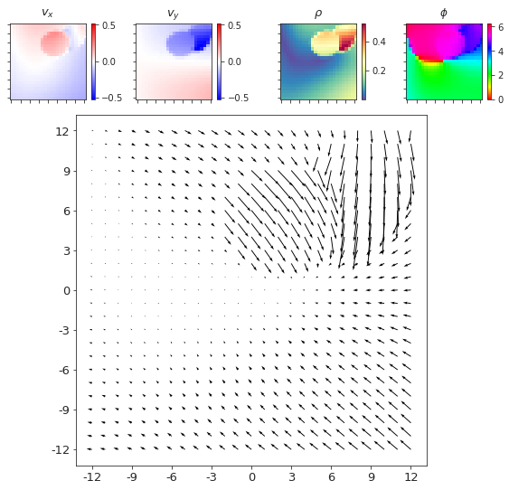
self.fix[i]
array([-0.12147092, -0.75780771, 1. ])
self.fix[i]
fov = 45
%%time
kws = dict(
terrain_phi=80,
terrain_fix=0.75,
)
self = of = OpticFlow(
category='terrain',
num=10000,
n_obj=4,
vlim_slf=(0.01, 1.0),
vlim_obj=(0.01, 1.0),
fov=fov,
res=5,
**kws,
).compute_coords()
x_env, v_tr, v_rot = self.compute_flow()
CPU times: user 16.4 s, sys: 707 ms, total: 17.1 s
Wall time: 17.1 s
accepted = of.filter(4)
accepted.sum()
3027
bound = 1 / np.tan(np.deg2rad(self.fov))
bound
1.0000000000000002
ax = sns.histplot(x=of.fix[:, 0], y=of.fix[:, 1])
ax_square(ax);
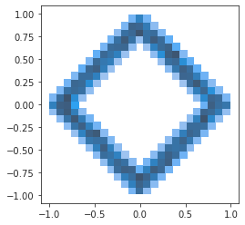
_ = show_opticflow(of.alpha_dot[accepted], scale=None)
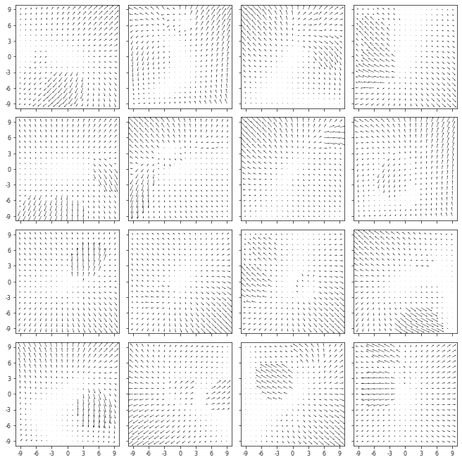
_ = show_opticflow_full(of.alpha_dot[accepted][7])
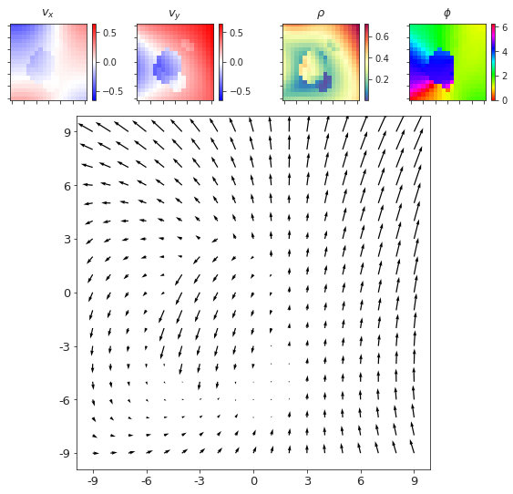
a = self.alpha_dot[accepted]
a.shape
(3027, 19, 19, 2)
test = np.abs(np.round(a[:, 9, 9], 5)).sum(1) > 0
np.where(test)[0]
array([ 6, 7, 13, 17, 23, 29, 37, 44, 45, 48, 51,
54, 65, 74, 78, 83, 88, 91, 92, 94, 96, 100,
104, 111, 113, 115, 117, 118, 121, 123, 129, 135, 143,
145, 149, 158, 161, 165, 170, 171, 172, 175, 192, 193,
199, 200, 203, 214, 216, 223, 228, 233, 236, 237, 238,
242, 244, 247, 248, 252, 253, 254, 257, 258, 259, 261,
262, 269, 271, 274, 276, 278, 280, 285, 286, 298, 299,
300, 304, 308, 309, 310, 311, 314, 315, 316, 322, 324,
329, 330, 336, 337, 339, 346, 347, 352, 354, 358, 359,
360, 364, 373, 374, 375, 380, 381, 382, 384, 386, 389,
393, 394, 396, 397, 407, 408, 410, 416, 417, 424, 428,
432, 434, 441, 443, 445, 449, 452, 453, 456, 461, 462,
467, 468, 471, 482, 489, 495, 507, 510, 512, 514, 515,
518, 519, 524, 529, 533, 537, 541, 545, 547, 548, 551,
554, 556, 558, 559, 560, 562, 563, 565, 566, 567, 568,
572, 573, 583, 585, 587, 591, 597, 599, 600, 604, 607,
608, 609, 611, 612, 614, 615, 620, 624, 629, 630, 631,
637, 639, 646, 648, 652, 653, 669, 670, 672, 677, 679,
683, 684, 685, 688, 690, 696, 698, 699, 701, 703, 705,
707, 714, 719, 724, 726, 727, 728, 730, 734, 743, 745,
748, 749, 752, 754, 762, 766, 767, 774, 776, 782, 789,
793, 796, 797, 801, 805, 809, 814, 815, 821, 823, 825,
827, 831, 842, 853, 854, 865, 867, 871, 877, 883, 895,
900, 901, 902, 903, 905, 910, 911, 912, 915, 916, 918,
924, 925, 928, 930, 939, 943, 945, 948, 950, 952, 960,
962, 965, 967, 971, 976, 978, 979, 980, 981, 984, 986,
987, 989, 995, 1006, 1015, 1017, 1023, 1025, 1028, 1029, 1032,
1034, 1035, 1045, 1048, 1049, 1050, 1054, 1055, 1056, 1057, 1058,
1059, 1064, 1065, 1067, 1070, 1071, 1077, 1079, 1081, 1088, 1091,
1092, 1094, 1099, 1100, 1102, 1103, 1105, 1112, 1115, 1116, 1123,
1127, 1130, 1137, 1142, 1144, 1145, 1150, 1151, 1152, 1158, 1165,
1167, 1172, 1181, 1183, 1188, 1190, 1192, 1194, 1195, 1198, 1199,
1200, 1209, 1210, 1216, 1218, 1221, 1226, 1227, 1236, 1238, 1243,
1247, 1249, 1251, 1254, 1261, 1264, 1275, 1277, 1279, 1281, 1283,
1286, 1295, 1298, 1301, 1302, 1306, 1307, 1310, 1312, 1315, 1321,
1323, 1325, 1329, 1330, 1334, 1336, 1341, 1343, 1344, 1350, 1352,
1355, 1360, 1364, 1367, 1373, 1374, 1379, 1388, 1393, 1395, 1399,
1400, 1401, 1402, 1403, 1405, 1406, 1409, 1413, 1415, 1416, 1417,
1419, 1420, 1424, 1427, 1429, 1430, 1432, 1435, 1436, 1438, 1441,
1445, 1446, 1448, 1455, 1457, 1458, 1459, 1461, 1463, 1466, 1470,
1471, 1472, 1473, 1477, 1478, 1479, 1484, 1485, 1486, 1487, 1490,
1494, 1500, 1501, 1505, 1510, 1517, 1524, 1526, 1531, 1532, 1533,
1539, 1544, 1551, 1552, 1553, 1558, 1564, 1565, 1571, 1574, 1575,
1576, 1577, 1578, 1579, 1580, 1584, 1592, 1593, 1601, 1605, 1607,
1609, 1611, 1615, 1618, 1619, 1623, 1627, 1636, 1638, 1650, 1652,
1662, 1663, 1664, 1667, 1672, 1674, 1676, 1677, 1680, 1681, 1683,
1689, 1692, 1701, 1707, 1709, 1711, 1712, 1713, 1714, 1715, 1721,
1726, 1729, 1730, 1735, 1737, 1746, 1752, 1761, 1764, 1765, 1770,
1772, 1778, 1788, 1791, 1796, 1798, 1801, 1802, 1805, 1809, 1810,
1811, 1813, 1814, 1817, 1818, 1823, 1828, 1829, 1831, 1833, 1835,
1840, 1845, 1846, 1847, 1849, 1850, 1852, 1856, 1857, 1860, 1862,
1870, 1872, 1873, 1874, 1876, 1879, 1881, 1884, 1886, 1888, 1890,
1891, 1894, 1897, 1898, 1899, 1906, 1910, 1912, 1914, 1919, 1920,
1922, 1925, 1930, 1931, 1932, 1934, 1935, 1936, 1941, 1942, 1946,
1947, 1948, 1952, 1955, 1956, 1958, 1960, 1963, 1971, 1973, 1982,
1986, 1987, 1988, 1990, 2008, 2009, 2010, 2011, 2021, 2022, 2024,
2027, 2029, 2030, 2034, 2035, 2037, 2044, 2046, 2055, 2056, 2068,
2069, 2073, 2083, 2084, 2086, 2095, 2101, 2107, 2113, 2115, 2118,
2120, 2121, 2127, 2128, 2129, 2135, 2140, 2141, 2142, 2143, 2144,
2149, 2154, 2156, 2159, 2162, 2165, 2167, 2169, 2176, 2177, 2188,
2189, 2191, 2194, 2199, 2202, 2213, 2216, 2220, 2222, 2224, 2227,
2228, 2229, 2231, 2233, 2234, 2235, 2236, 2237, 2239, 2242, 2248,
2253, 2257, 2260, 2261, 2262, 2271, 2278, 2279, 2281, 2284, 2286,
2292, 2308, 2319, 2322, 2327, 2333, 2337, 2339, 2342, 2344, 2346,
2347, 2348, 2352, 2357, 2360, 2365, 2368, 2370, 2376, 2378, 2382,
2383, 2384, 2398, 2403, 2404, 2411, 2417, 2418, 2421, 2423, 2425,
2428, 2429, 2430, 2431, 2433, 2438, 2444, 2461, 2462, 2467, 2468,
2473, 2474, 2477, 2486, 2491, 2494, 2495, 2497, 2498, 2501, 2506,
2508, 2514, 2520, 2521, 2522, 2535, 2541, 2543, 2547, 2552, 2559,
2560, 2561, 2562, 2568, 2569, 2571, 2572, 2579, 2586, 2589, 2599,
2607, 2609, 2622, 2623, 2624, 2626, 2633, 2637, 2647, 2648, 2649,
2655, 2660, 2661, 2664, 2665, 2668, 2673, 2675, 2677, 2685, 2686,
2698, 2700, 2709, 2711, 2713, 2715, 2718, 2719, 2728, 2732, 2735,
2736, 2737, 2741, 2746, 2748, 2749, 2753, 2758, 2759, 2766, 2773,
2776, 2777, 2778, 2780, 2783, 2788, 2790, 2793, 2795, 2800, 2802,
2808, 2810, 2811, 2814, 2815, 2820, 2826, 2840, 2845, 2846, 2848,
2849, 2855, 2857, 2859, 2860, 2861, 2865, 2868, 2873, 2882, 2884,
2888, 2891, 2896, 2897, 2898, 2899, 2900, 2902, 2904, 2905, 2906,
2910, 2911, 2914, 2915, 2916, 2919, 2921, 2923, 2928, 2937, 2942,
2944, 2945, 2947, 2954, 2955, 2964, 2967, 2969, 2972, 2975, 2978,
2980, 2982, 2984, 2986, 2994, 2997, 3002, 3003, 3009, 3011, 3013,
3016, 3022, 3023, 3025])
i = 2713
a[i, 9, 9]
array([ 0.01421958, -0.01554415])
_ = show_opticflow_full(a[i])
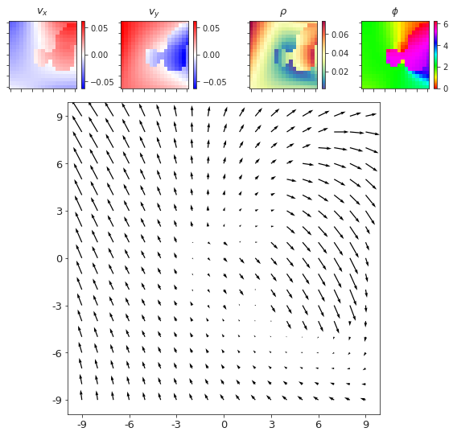
self.z_env[accepted][i, 9, 9]
0.6011252544169596
self.objects[2].pos[accepted][i]
array([-0.55711251, -0.10317361, 0.60112525])
self.fix[accepted][i]
array([-0.77388125, -0.0501422 , 1. ])
plt.imshow(of.z_env[accepted][7])
plt.colorbar()
<matplotlib.colorbar.Colorbar at 0x7ff1786ca520>
self.z_env[:, self.dim//2, self.dim//2]
array([1. , 1. , 0.73433256, ..., 1. , 1. ,
1. ])
self.fix[:, 2]
array([1., 1., 1., ..., 1., 1., 1.])
of.v_slf.shape
(10000, 3)
np.round(of.v_slf[:, 2], 12)
array([0., 0., 0., ..., 0., 0., 0.])
sns.histplot(of.v_slf[:, :2].ravel())
<AxesSubplot:ylabel='Count'>
r = cart2polar(of.v_slf)
sp_stats.pearsonr(r[:, 2], cart2polar(of.fix)[:, 2])
(0.5156740969411244, 0.0)
i = 0
delta_phi = np.zeros(self.num)
for i in range(self.num):
delta_phi[i] = np.arccos(1 - sp_dist.cosine(
of.v_slf[i, :2], of.fix[i, :2]))
sns.histplot(delta_phi)
<AxesSubplot:ylabel='Count'>
np.round(of.alpha_dot[:, 9, 9], 10).sum()
1.8217581431999998
_ = show_opticflow_full(of.alpha_dot[4], scale=10)
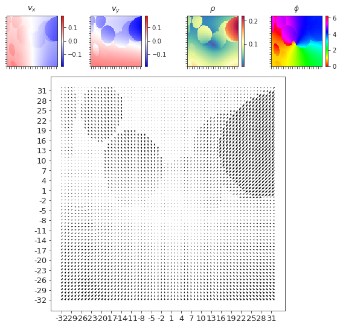
self.z_env.shape
(10000, 65, 65)
plt.imshow(self.z_env[4])
plt.colorbar();
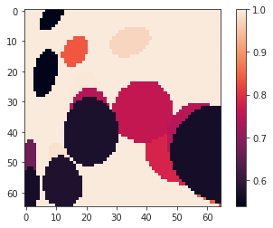
i = 129
plt.imshow(x_obj[i, ..., 2])
plt.colorbar()
<matplotlib.colorbar.Colorbar at 0x7ff732a28c10>
plt.imshow(x[i, ..., 2])
plt.colorbar()
<matplotlib.colorbar.Colorbar at 0x7ff7329674f0>
pos = np.zeros((100000, 2))
for i in range(100000):
length = np.sqrt(np.random.uniform(0, 1))
angle = np.pi * np.random.uniform(0, 2)
pos[i, 0] = length * np.cos(angle)
pos[i, 1] = length * np.sin(angle)
ax = sns.histplot(x=pos[:, 0], y=pos[:, 1])
ax_square(ax);
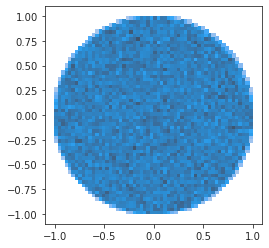
theta_0 = 80
r = self.z_bg / np.cos(np.deg2rad(theta_0))
r
5.758770483143631
pos = np.zeros((100000, 2))
for i in range(100000):
length = np.sqrt(np.random.uniform(0, r))
angle = np.pi * np.random.uniform(0, 2)
pos[i, 0] = length * np.cos(angle)
pos[i, 1] = length * np.sin(angle)
ax = sns.histplot(x=pos[:, 0], y=pos[:, 1])
ax_square(ax);
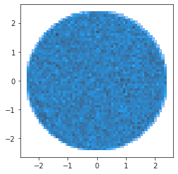
norm = np.sqrt(pos[:, 0] ** 2 + pos[:, 1] ** 2)
sns.histplot(norm);
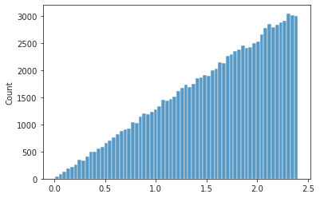
theta = np.arctan(norm / self.z_bg)
sns.histplot(theta)
<AxesSubplot:ylabel='Count'>

phi = random(0,2pi)
costheta = random(-1,1)
u = random(0,1)
theta = arccos( costheta )
r = R * cuberoot( u )
phi_0 = 80
phi = np.arcsin(self.rng.uniform(
low=-bound,
high=bound,
size=self.num,
))
sns.histplot(phi)
<AxesSubplot:ylabel='Count'>
u = np.stack([])
self.sample_vel(*self.vlim_slf)
array([[ 0.13567946, 0.08883991, 0.04297474],
[ 0.92708618, 0.08684659, -0.30172977],
[-0.1780309 , -0.66065427, -0.67785797],
...,
[-0.51780294, -0.11384867, 0.00465851],
[ 0.05520517, -0.08746331, -0.0832857 ],
[-0.2453287 , 0.0230093 , 0.16933763]])
theta = np.arccos(self.rng.uniform(
low=np.cos(np.max(theta)),
high=1,
size=self.num,
))
phi = self.rng.uniform(
low=0,
high=2 * np.pi,
size=self.num,
)
sns.histplot(theta)
<AxesSubplot:ylabel='Count'>
u = np.stack([np.ones(self.num), theta, phi], axis=1)
u.shape
(10000, 3)
sns.histplot(u[:, 2])
<AxesSubplot:ylabel='Count'>
ax = sns.histplot(x=self.objects[0].alpha[:, 0], y=self.objects[0].alpha[:, 1])
ax_square(ax);
self.alpha.shape
(65, 65, 2)
self.obj_bound = 0.97
self.obj_bound
0.97
self.span
array([-0.78539816, -0.76085447, -0.73631078, -0.71176709, -0.68722339,
-0.6626797 , -0.63813601, -0.61359232, -0.58904862, -0.56450493,
-0.53996124, -0.51541754, -0.49087385, -0.46633016, -0.44178647,
-0.41724277, -0.39269908, -0.36815539, -0.3436117 , -0.319068 ,
-0.29452431, -0.26998062, -0.24543693, -0.22089323, -0.19634954,
-0.17180585, -0.14726216, -0.12271846, -0.09817477, -0.07363108,
-0.04908739, -0.02454369, 0. , 0.02454369, 0.04908739,
0.07363108, 0.09817477, 0.12271846, 0.14726216, 0.17180585,
0.19634954, 0.22089323, 0.24543693, 0.26998062, 0.29452431,
0.319068 , 0.3436117 , 0.36815539, 0.39269908, 0.41724277,
0.44178647, 0.46633016, 0.49087385, 0.51541754, 0.53996124,
0.56450493, 0.58904862, 0.61359232, 0.63813601, 0.6626797 ,
0.68722339, 0.71176709, 0.73631078, 0.76085447, 0.78539816])
alpha.shape
(10000, 2)
_Obj = collections.namedtuple(
typename='Object',
field_names=[
'pos', 'v', # coordinate system: real
'alpha', 'r', # coordinate system: self
'size'],
)
bound = self.obj_bound * self.fov
bound = np.deg2rad(bound)
bound
0.7618362184955249
len(self.span[np.logical_and(-bound < self.span, self.span < bound)])
63
# bound = self.obj_bound * self.fov
# bound = np.deg2rad(bound)
# alpha = self.rng.uniform(
# low=-bound,
# high=bound,
# size=(self.num, 2),
# )
alpha = self.rng.choice(
a=self.span[np.logical_and(
-bound < self.span,
self.span < bound)],
replace=True,
size=(self.num, 2),
)
theta, phi = radself2polar(
a=alpha[:, 0],
b=alpha[:, 1],
)
u = [np.ones(self.num), theta, phi]
u = polar2cart(np.stack(u, axis=1))
u = self.apply_rot(u, transpose=False)
u = cart2polar(u)
z = self.rng.uniform(
low=self.obj_zlim[0],
high=self.obj_zlim[1],
size=self.num,
)
pos = [z / np.cos(u[:, 1]), u[:, 1], u[:, 2]]
pos = polar2cart(np.stack(pos, axis=1))
pos.shape
(10000, 3)
ax = sns.histplot(x=alpha[:, 0], y=alpha[:, 1])
ax_square(ax);
ax = sns.histplot(x=pos[:, 0], y=pos[:, 1])
ax_square(ax);
sns.histplot(pos[:, 2])
<AxesSubplot:ylabel='Count'>
sp_stats.pearsonr(self.fix[:, 0], pos[:, 0]), sp_stats.pearsonr(self.fix[:, 1], pos[:, 1])
((0.5139904905163384, 0.0), (0.5093883845946969, 0.0))
sp_stats.pearsonr(self.fix[:, 0], self.fix[:, 0] - pos[:, 0])
(-0.03291322293422943, 0.0009954744790164956)
sp_stats.pearsonr(self.fix[:, 1], self.fix[:, 1] - pos[:, 1])
(-0.03326642641091851, 0.0008773988858183745)
mask = self.compute_obj_mask(pos)
plt.imshow(mask[120])
<matplotlib.image.AxesImage at 0x7fb6f087e1c0>
plt.imshow(mask.mean(0))
<matplotlib.image.AxesImage at 0x7fb6f0850880>
sizes = mask.sum(1).sum(1)
sns.histplot(sizes)
<AxesSubplot:ylabel='Count'>
pos_self = self.apply_rot(pos, transpose=True)
r = cart2polar(pos_self)
np.argsort(r[:, 1])[::-1][:10]
array([ 794, 2862, 5055, 9957, 2278, 2523, 3703, 2865, 6524, 1101])
plt.imshow(mask[1944])
<matplotlib.image.AxesImage at 0x7fb6f074c790>
r[1944, 1], np.arccos(1 - sp_dist.cosine(pos[1944, :], self.fix[1944]))
(0.6940479576623331, 0.6940479576623331)
np.rad2deg(r[1944, 1])
39.76601875372613
np.rad2deg(np.max(self.theta))
54.735610317245346
alpha[1944]
array([0.41724277, 0.61359232])
ta = np.tan(alpha[1944, 0])
tb = np.tan(alpha[1944, 1])
theta = np.sqrt(ta**2 + tb**2)
theta = np.arctan(theta)
theta
0.6940479576623332
sns.histplot(r[:, 1])
<AxesSubplot:ylabel='Count'>
alpha_computed = np.stack([
np.arctan2(pos_self[:, 0], pos_self[:, 2]),
np.arctan2(pos_self[:, 1], pos_self[:, 2]),
], axis=1)
ax = sns.histplot(x=alpha_computed[:, 0], y=alpha_computed[:, 1])
ax_square(ax);
ax = sns.histplot(x=self.objects[0].alpha[:, 0], y=self.objects[0].alpha[:, 1])
ax_square(ax);
mask = self.compute_obj_mask(self.objects[0].pos)
plt.imshow(mask.mean(0))
<matplotlib.image.AxesImage at 0x7fb6f21e27f0>
sns.histplot(self.objects[0].r[:, 1]);
for _ in range(5):
print(self.sample_pos())
[[ 0.19962233 -0.15690462 0.96086846]]
[[0.31838468 0.0167031 0.68181502]]
[[0.46698779 0.27845735 0.80473259]]
[[ 0.2948436 -0.23959355 0.35138524]]
[[-0.2379231 -0.81715871 0.89273048]]
for i, j in itertools.product(range(2), range(2)):
if i == j:
continue
corr = sp_stats.pearsonr(self.objects[1].alpha[:, i], self.objects[4].alpha[:, j])[0]
print(i, j, np.round(corr, 3))
0 1 -0.009
1 0 0.003
alpha_all = np.stack([
obj.alpha for obj in
self.objects.values()
], axis=-1)
alpha_all.shape
(100000, 2, 8)
a = alpha_all.mean(-1)
a.shape
(100000, 2)
ax = sns.histplot(x=a[:, 0], y=a[:, 1])
ax_square(ax);

ax = sns.histplot(x=alpha_all[:, 0, :].ravel(), y=alpha_all[:, 1, :].ravel())
ax_square(ax);
ax = sns.histplot(x=alpha_all[:, 0, 4].ravel(), y=alpha_all[:, 1, 4].ravel())
ax_square(ax);

obj_masks = {
obj_i: self.compute_obj_mask(obj.pos)
for obj_i, obj in self.objects.items()
}
fig, axes = create_figure(1, 3, (13, 4), 'all', 'all')
for obj_i, ax in enumerate(axes.flat, start=1):
ax.imshow(obj_masks[obj_i][i])
ax.invert_yaxis()
plt.show()
i = 200
obj_z = {
obj_i: obj.pos[i, 2] for
obj_i, obj in self.objects.items()
}
order, obj_z = zip(*sorted(
obj_z.items(),
key=lambda t: t[1],
reverse=True,
))
order, obj_z
((3, 7, 8, 11, 15, 1, 13, 9, 2, 14, 12, 16, 6, 4, 5, 10),
(0.880074816993532,
0.8514233624972034,
0.811518088986283,
0.7986280046616616,
0.7653652995556307,
0.7440066956223077,
0.7138837511525279,
0.6798982214253513,
0.6735244431858847,
0.5619469576682877,
0.5539366972912327,
0.5052356825582347,
0.42697085895160336,
0.39195447659433585,
0.36379794191208537,
0.3567020452771259))
m = np.zeros((self.dim, self.dim))
for obj_i in order:
m[obj_masks[obj_i][i]] = obj_i
fig, ax = create_figure()
im = ax.imshow(m)
plt.colorbar(im, ax=ax)
ax.invert_yaxis();

len(unique_idxs(m))
16
self.fix[i]
array([0.71687065, 0.2418178 , 1. ])
x_obj = self.x_bg.copy()
v_tr = np.zeros((self.num, self.dim, self.dim, 3))
for i in range(self.num):
obj_z = {
obj_i: obj.pos[i, 2] for
obj_i, obj in self.objects.items()
}
order, obj_z = zip(*sorted(
obj_z.items(),
key=lambda t: t[1],
reverse=True,
))
for obj_i, z in zip(order, obj_z):
m = obj_masks[obj_i][i]
x_obj[i, ..., -1][m] = z
for j in range(3):
v = self.objects[obj_i].v[i, j]
v_tr[i, ..., j][m] = v
x_obj = self.apply_rot(x_obj, transpose=True)
v_tr = self.apply_rot(v_tr, transpose=True)
obj = objects[1]
m = masks[1]
obj.v.shape, obj.pos.shape, m.shape
((1000, 3), (1000, 3), (1000, 65, 65))
v_transl = self._compute_v_tr(obj.v)
# v_transl is in self's coordinate system
v_transl.shape
(1000, 65, 65, 3)
x_obj = self.x_bg.copy()
for i in range(self.num):
x_obj[i, ..., -1][m[i]] = obj.pos[i, -1]
x_obj = self.apply_rot(x_obj, transpose=True)
# now: x_obj is in self's coordinate system
fig, axes = create_figure(1, 3, (12.5, 3), 'all', 'all')
for i, ax in enumerate(axes.flat):
im = ax.imshow(x_obj[146, ..., i])
plt.colorbar(im, ax=ax)
ax.invert_yaxis()
plt.show()
i = 146
fig, axes = create_figure(1, 3, (13, 3), 'all', 'all')
for obj_i, ax in enumerate(axes.flat, start=1):
ax.set_title(f"obj #{obj_i}, z = {objects[obj_i].pos[ii, 2]:0.2f}")
im = ax.imshow(masks[obj_i][i])
plt.colorbar(im, ax=ax)
ax.invert_yaxis()
i = 146
obj_z = {
obj_i: obj.pos[i, 2] for
obj_i, obj in self.objects.items()
}
order, obj_z = zip(*sorted(
obj_z.items(),
key=lambda t: t[1],
reverse=True,
))
order, obj_z
((2, 3, 1), (0.9124281049682237, 0.4839207051759733, 0.3516704320060139))
m = np.zeros((self.dim, self.dim))
for obj_i in order:
m[masks[obj_i][i]] = obj_i
fig, ax = create_figure()
im = ax.imshow(m, cmap='Accent_r')
plt.colorbar(im, ax=ax)
ax.invert_yaxis();
for obj_i, z in zip(order, obj_z):
x_obj[i, ..., -1][masks[obj_i][i]] = z
x_obj = self.apply_rot(x_obj, transpose=True)
fig, axes = create_figure(1, 3, (12.5, 3), 'all', 'all')
for j, ax in enumerate(axes.flat):
im = ax.imshow(x_obj[i, ..., j])
plt.colorbar(im, ax=ax)
ax.invert_yaxis()
plt.show()

x_obj = self.x_bg.copy()
m_obj = np.zeros((self.num, self.dim, self.dim))
v_transl = np.zeros((self.num, self.dim, self.dim, 3))
for i in range(self.num):
obj_z = {
obj_i: obj.pos[i, 2] for
obj_i, obj in self.objects.items()
}
order, obj_z = zip(*sorted(
obj_z.items(),
key=lambda t: t[1],
reverse=True,
))
# start: possibly unneeded
for obj_i in order:
m_obj[i][masks[obj_i][i]] = obj_i
# end: possibly unneeded
for obj_i in order:
m = masks[obj_i][i]
z = self.objects[obj_i].pos[i, 2]
x_obj[i, ..., -1][m] = z
for j in range(3):
v = self.objects[obj_i].v[i, j]
v_transl[i, ..., j][m] = v
x_obj = self.apply_rot(x_obj, transpose=True)
v_transl = self.apply_rot(v_transl, transpose=True)
x_obj.shape, v_transl.shape
((1000, 65, 65, 3), (1000, 65, 65, 3))
i = 153
fig, axes = create_figure(1, 3, (12.5, 3), 'all', 'all')
for j, ax in enumerate(axes.flat):
im = ax.imshow(x_obj[i, ..., j])
plt.colorbar(im, ax=ax)
ax.invert_yaxis()
plt.show()
i = 153
fig, axes = create_figure(1, 3, (12.5, 3), 'all', 'all')
for j, ax in enumerate(axes.flat):
im = ax.imshow(v_transl[i, ..., j])
plt.colorbar(im, ax=ax)
ax.invert_yaxis()
plt.show()
fig, ax = create_figure()
im = ax.imshow(m_obj[i], cmap='Accent_r')
plt.colorbar(im, ax=ax)
ax.invert_yaxis();
print({
obj_i: obj.pos[i, 2] for
obj_i, obj in self.objects.items()
})
{1: 0.5207490681321417, 2: 0.34087524542287545, 3: 0.35527375541019524}
print({
obj_i: obj.v[i, 2] for
obj_i, obj in self.objects.items()
})
{1: 0.11790314330019189, 2: 0.19070495739681256, 3: -0.1922796457134923}
v_tr = self._compute_v_tr(self.objects[2].v)
v_tr[i, self.dim//2, self.dim//2, 2]
-0.30156062123004446
v_tr = self._compute_v_tr(self.objects[3].v)
v_tr[i, self.dim//2, self.dim//2, 2]
-0.10248415346341125
v_tr = self._compute_v_tr(self.objects[1].v)
v_tr[i, self.dim//2, self.dim//2, 2]
-0.014349742346900396
v_slf = self.sample_vel(*self.vlim_slf)
v_slf = self._compute_v_tr(v_slf)
v_slf.shape
(1000, 65, 65, 3)
v_transl.shape
(1000, 65, 65, 3)
v_transl -= v_slf
i = 153
fig, axes = create_figure(1, 3, (12.5, 3), 'all', 'all')
for j, ax in enumerate(axes.flat):
im = ax.imshow(v_transl[i, ..., j])
plt.colorbar(im, ax=ax)
ax.invert_yaxis()
plt.show()
def _compute_alpha_dot(
self,
v: np.ndarray,
x: np.ndarray = None,
axis: int = 3, ):
if x is None:
x = self.x
delta = v.ndim - x.ndim
if delta > 0:
for n in v.shape[-delta:]:
x = _expand(x, n, -1)
alpha_dot = []
for i in [0, 1]:
a = (
v.take(i, axis) * x.take(2, axis) -
v.take(2, axis) * x.take(i, axis)
)
a /= sp_lin.norm(
x.take([i, 2], axis),
axis=axis,
) ** 2
a = np.expand_dims(a, axis)
alpha_dot.append(a)
alpha_dot = np.concatenate(alpha_dot, axis)
return alpha_dot
alpha_dot = _compute_alpha_dot(self, v=v_transl, x=x_obj)
alpha_dot.shape
(1000, 65, 65, 2)
from figures.fighelper import show_opticflow, show_opticflow_full
show_opticflow_full(alpha_dot[i], tick_spacing=8);
from skimage.transform import resize
alpha_dot[i].shape
(65, 65, 2)
d = 25
v = np.zeros((d, d, 2))
v[..., 0] = resize(alpha_dot[i, ..., 0], (d,) * 2)
v[..., 1] = resize(alpha_dot[i, ..., 1], (d,) * 2)
show_opticflow_full(v);

x_obj.shape
(1000, 65, 65, 3)
v_transl[i][masks[obj_i][i]].shape
(292, 3)
v_transl = self.apply_rot(obj.v, transpose=True)
v_transl.shape
(1000, 3)
v_transl[~m] = 0
plt.imshow(v_transl[452, ..., 2])
plt.colorbar()
<matplotlib.colorbar.Colorbar at 0x7f3db2f561c0>
v_transl[452, ..., 2]
array([[0., 0., 0., ..., 0., 0., 0.],
[0., 0., 0., ..., 0., 0., 0.],
[0., 0., 0., ..., 0., 0., 0.],
...,
[0., 0., 0., ..., 0., 0., 0.],
[0., 0., 0., ..., 0., 0., 0.],
[0., 0., 0., ..., 0., 0., 0.]])
x = dc(self.x)
x[..., -1][m].shape
(309081,)
obj.x.shape
(1000, 3)
x_obj = self.x_bg.copy()
for i in range(self.num):
x_obj[i, ..., -1][np.where(mask[i])] = pos[i, 2]
x_obj_in_self = 'aij, axyi -> axyj'
x_obj_in_self = np.einsum(x_obj_in_self, self.R, x_obj)
plt.imshow(x[120, ..., 2])
plt.colorbar()
<matplotlib.colorbar.Colorbar at 0x7f3db1511f10>
(~np.isnan(x_obj)).sum()
927243
(~m).sum()
3915919
sns.histplot(cart2polar(obj.v)[:, 0])
<AxesSubplot:ylabel='Count'>
v_slf = self.sample_vel(*self.vlim_slf)
v_slf.shape
(1000, 3)
sns.histplot(cart2polar(v_slf)[:, 0]);
v_transl = 'aij, ai -> aj'
v_transl = np.einsum(v_transl, self.R, obj.v)
v_tr = np.repeat(np.repeat(np.expand_dims(np.expand_dims(
v_transl, 1), 1), self.dim, 1), self.dim, 2)
v_tr.shape
(1000, 65, 65, 3)
v_transl.shape
(1000, 3)
m.shape
(1000, 65, 65)
v_tr[m]. shape
(309081, 3)
m.sum()
309081
def _expand(arr, reps, axis):
return np.repeat(np.expand_dims(
arr, axis=axis),
repeats=reps,
axis=axis,
)
_expand(v_transl, self.dim, 1).shape
(1000, 65, 3)